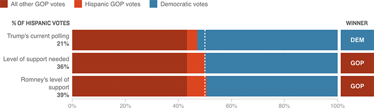

With Trump’s current level of Hispanic support, he is likely to lose Florida
Projections assume a 2 percentage point increase in turnout and a 4 percentage point increase in GOP support among white men.
